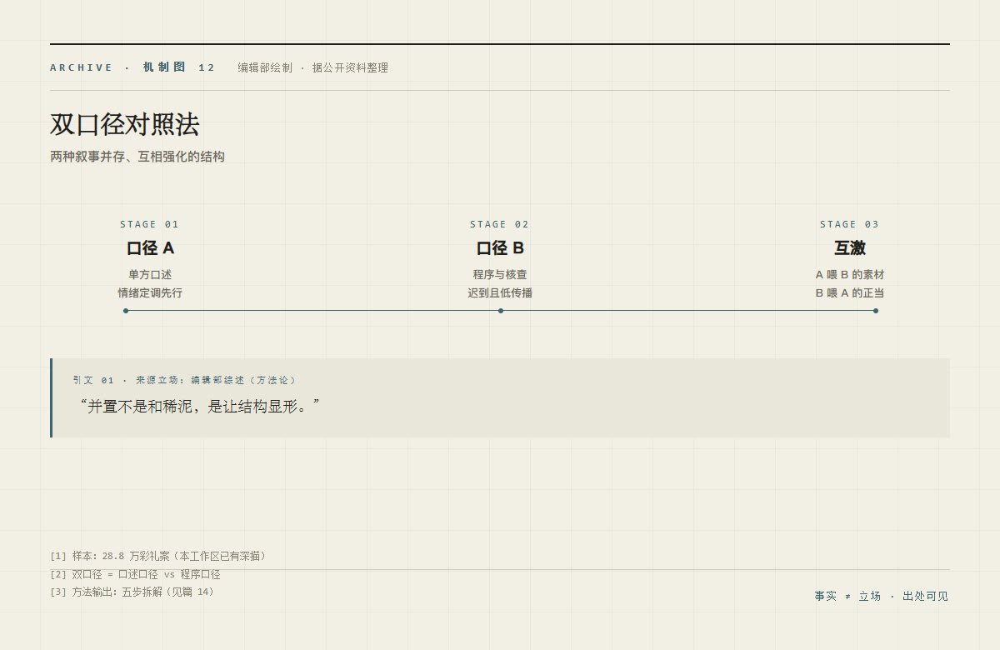

同一件事，两种叙事，互相喂养
常态化观察 · 之五 · 标本复盘（下）· 双口径对照法的完整演示。
上一篇按时间切标本，这一篇换刀法：双口径对照。同一件事，在公共场域里从来只有一个叙事赢，但叙事从来不只有一条。把两条口径并排放——不评判谁真谁假，只看它们怎么互相作用——结构就会显形。本篇用彩礼案做演示样本（完整分析见本工作区《2026.11.11 · 28.8 万彩礼谈崩》及其「原声实录」附页，本文只取结构）。方法最后会沉淀成五步工具，留给收束篇。
口径 A（叙事口径）：以单方口述为核心，经情感动员结构放大，完成对「发生了什么」的先行定义。它的载体是直播连麦、长文、切片；它的传播是即时的、高互动的；它给的是定性——谁负心、谁过分、谁该被谴责。口径 B（程序口径）：以法律关系与证据为核心，载体是法律科普、律师解读、程序条文；它的传播是滞后的、低互动的；它给的是分类——这是赠与还是彩礼、该不该返还、举证责任在谁。
注意：两个口径不必然矛盾。口径 A 讲的是「她经历了什么」，口径 B 讲的是「法律怎么分类」，理论上可以并存。公共场域的悲剧是：传播系统只让 A 活着。B 每次出场都在回答一个没人问的问题——「先别管法律，你就说他是不是人渣？」口径 B 一开口就输掉了提问权。
样本（据公开传播内容与本工作区既有分析）：一场关于 28.8 万元彩礼的婚约纠纷，经直播连麦进入公共视野。口径 A 的运行轨迹是：当事人连麦自述 → 情绪共鸣 → 话题发酵 → 对男方的道德定性完成。这一步几乎发生在 24 小时内。口径 B 的运行轨迹是：法律科普开始跟进（彩礼与赠与的区分、返还的法定情形、举证责任）→ 但传播量与互动量始终是口径 A 的零头——而且每当科普出场，评论区的标准回应是「这时候还讲法律？」[1]
样本里最值得放进档案的细节，是本工作区在「原声实录」附页里整理的当事人态度四阶段转变：从「是他不负责任」到「我也有一部分过错」，到「是我得负主要责任」，到「是我害了他」——27 条逐字引语按时间排列，责任刻度肉眼可见地移动[2]。这个标本的珍贵之处在于：它展示了当事人自己也在叙事机制里被推着走——口径 A 的定性一旦成立，连说出定性的人也被定性绑架，改口的成本高到不如把角色演到底。叙事机制没有作者，所有人都是演员。
（纪律重申：本样本的个案是非不作裁决。连麦内容是单方陈述，未经另一方证实；态度转变的归因可以有多种解释——反思、舆论压力、策略调整——本篇只采「刻度在移动」这个可核对的事实，不采任何一种归因。）
引文 01 · 来源立场：编辑部综述（方法论）
"并置不是和稀泥，是让结构显形。"
—— 双口径对照法的方法论声明（编辑部综述）。立场：方法论视角；对照的目的不是折中。

▲ 图 12：双口径对照法 · 编辑部绘制。样本结构见注 [1][2]。
并排放完，最深的一层才出来：两个口径不是各说各话，是互相喂养。口径 A 每次情绪爆发，都给口径 B 送去「你看，舆论都在乱来」的素材——于是 B 阵营的愤怒与自嘲升级，产出更多对轰内容；口径 B 每次「这时候还讲法律」的回击，又给 A 送去「他们冷血、他们洗地」的素材——于是 A 阵营的道德动员更有劲。两个阵营在对方身上找到了自己存在的理由。这就是篇 09、10 说的螺旋在叙事层的形态。
互激结构里有一个关键的不对称要指出来：口径 A 的互激收益是流量（情绪升级→互动升级→分发升级），口径 B 的互激收益只有正确感（「我说的对」→「但没人听」）。收益不对称决定了螺旋的终点：口径 B 的持有者会逐渐退场或转向对轰（用 A 的武器作战），而口径 B 本身——那份冷静的、分类的、不讨喜的程序理性——从公共语料里慢慢消失。这就是「公共语言的贫困」的最终完成式（篇 07）。
双口径对照法的价值就在这儿：它不裁决 A、B 谁真，它让你看见裁判席是空的。公共场域里没有一个机制在做「A 的事实主张 vs B 的分类框架」的对齐作业，因为对齐作业没有互动量。看见这一点，才轮得到收束篇的问题——除了对轰和沉默，还有没有第三种位置。
（再对称一次：本篇演示用的是彩礼案，口径 A 恰好在女性一方——这不意味着 A 永远属于哪个性别。换一个样本（比如篇 06 的被指控方案例），A、B 的持方会整个换位。方法跟着结构走，不跟着性别走。）
注 · SOURCES
[1] 28.8 万彩礼案的传播轨迹，据公开传播内容与本工作区《2026.11.11_28.8万彩礼谈崩》（含正文与原声实录附页）；连麦为单方陈述，未经另一方证实。
[2] 当事人态度四阶段转变（27 条逐字引语），见该文「原声实录·附页」；态度转变的归因本文不裁决。
[3] 「口径 A/B」「互激结构」「裁判席是空的」为本文的分析性概念（双口径对照法），系方法论框架。
[4] 双口径持方与性别无固定对应，为本文的方法论声明，防止方法被用作单向指控工具。
口径说明
本文为社会学观察，不站任何性别立场，作者性别不作为论证依据。双口径对照不裁决个案是非；连麦陈述未经另一方证实；方法跟着结构走，不跟着性别走。拆解机制是为了理解，不是行动指南。
出口：双口径对照可以做成日常工具——下次再遇到刷屏事件，先别选边，花三分钟把「情绪定性的那条」和「程序分类的那条」各写一行，并排看。看完了再决定说不说话。下一篇开始收束：第三种位置存不存在。